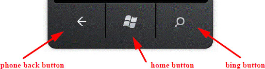
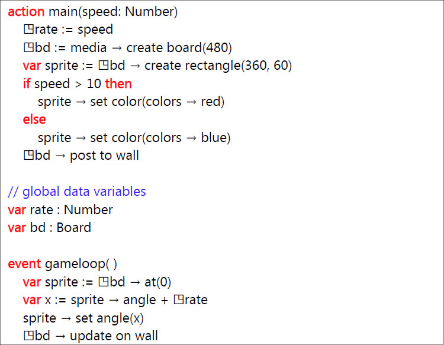
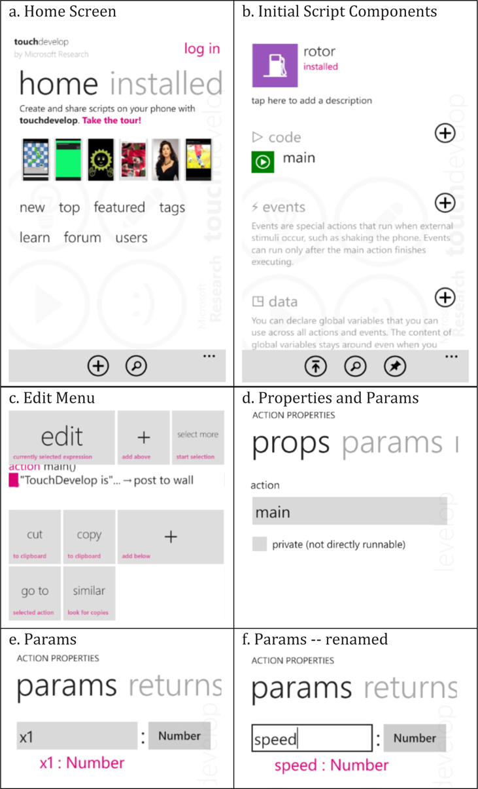
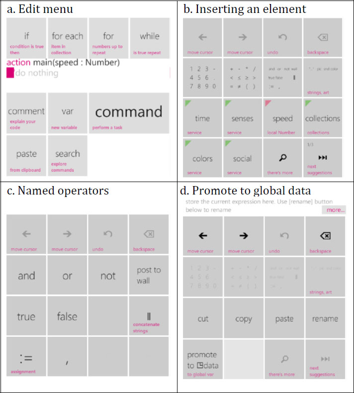
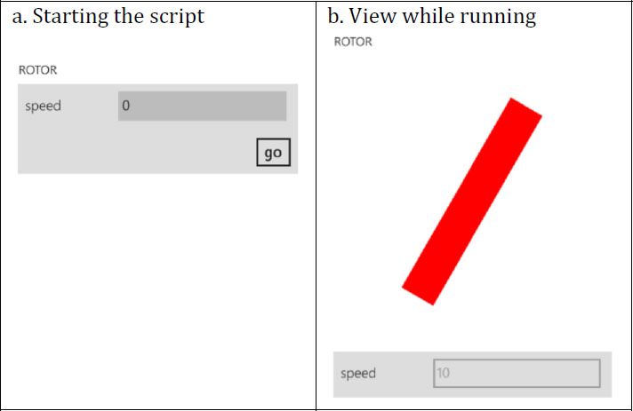

This appendix provides a worked example of using the TouchDevelop editor on a Windows phone. It does not cover all the editor’s features. Some experimentation is suggested for gaining familiarity with the editor.
E.1 The sample program
The script to be entered is shown in Figure A-1. It is published under the name rotor with code name /cqxk.
E.2 The back button, undo and mistakes
The phone has three buttons below the touch sensitive screen. The important button used frequently in editing a script is the phone back button. Its main purpose is to return the screen to a previous state. It is often useful for recovering from a mistake. If, for example, the bing button is accidentally touched in the middle of an editing session and the bing search engine comes up, the back button will exit from bing and return to the editor.

While editing, there is an undo button provided on the top row of every edit menu. When it is not dimmed, tapping that undo button will do exactly what it says.

Figure A-1
The rotor program /cqxk
E.3 The editing example
The screen contents change many times as the editing steps detailed below are followed. For space reasons, only a selection of the screenshots can be included in this chapter.
Getting started
1.
Start TouchDevelop.
3.
Rename the script to rotor.
5.
See the initial main action with its default body.
6.
Tap anywhere on the statement inside the action.
8.
Tap anywhere in the top line on the screen (which begins with the keyword action).
10.
Tap the word params or drag the screen left to select params. (The params name is called a pivot; there are several pivots which can be selected, showing different features of the action.)
13.
Tap the phone back button.

Figure A-2
Getting started screenshots
The second line of code in the main action
1.
Tap in the white space below the first line of code and tap the + (add expression) button.
2.
Tap the row 2, col 3 button (labeled and or …); then select ‘:=’.
3.
Tap the button labeled media, this refers to the media resource.
4.
Tap create board, this refers to one of the media methods.
5.
Tap the row 2, col 1 button (labeled 1 2 3 …).
6.
Tap the backspace button 3 times.
7.
Tap the 4 8 and 0 buttons in sequence to enter 480.
8.
Tap the ‘....’ variable name, and rename it to bd, tapping the phone back button afterwards.
9.
Tap the bd variable name and tap the promote to ◳data button.

Figure A-3
Editing the first line
The third line of code in the main action
1.
Tap in the white space below the last line of code, tap the ‘+’ (add expression) button.
2.
Tap the ◳data button and tap the bd button to insert this global variable.
3.
Tap the bottom right button labeled next suggestions, tap a few more times until create rectangle appears on a button. Tap it.
4.
Tap the row 2, col 1 button (1 2 3 …), and then edit the 200 to turn it into 360.
5.
Using the move cursor buttons, move the cursor between the 2 and 0 digits, then replace the 2 with 6.
6.
Oops, we wanted to save the whole expression in a variable; drag across the whole line of code to highlight it. The menu of choices has changed; tap the extract to var button.
7.
Tap the phone back button to see what happened.
8.
Tap that last line of code (consisting of just the variable sprite), and tap the cut button.
Starting the if statement
1.
Tap the + button at the bottom of the screen.
2.
Tap the button labeled if.
3.
Tap the button labeled speed.
4.
Tap the row 2, col 2 button (labeled + - …).
5.
Tap the > button.
6.
Tap the row 2, col 1 button (labeled 1 2 3 …), and tap 1 and tap 0 so that the number 10 is produced.
The ‘then’ clause of the if statement
1.
Tap in white space below the line of code beginning with the if keyword; tap ‘+’ (add expression).
2.
Tap the button labeled sprite, hit the next suggestions button several times until set color appears as a button; tap it.
3.
Tap the identifier random in the supplied default parameter value, and tap the backspace button to delete the identifier.
4.
Tap next suggestions until red appears as a choice; tap it.
5.
The then clause is finished (we would tap the white below if there's another statement to add to the clause); tap the phone back button.
The else clause of the if statement
1.
Tap the keyword else, then tap ‘+’ (add below); then tap the button labeled command.
2.
Enter the line of code sprite → set color(colors → blue) in a similar manner to steps 2-4 under the ‘then clause’ heading; tap the phone
back button.
The last statement of the main action
1.
Tap the keyword if to select the whole if statement; tap ‘+’ add below; tap the command button.
2.
Select ◳data, select bd; tap next suggestions to find the post to wall method and tap it.
3.
Tap the phone back button, and we have the entire main action completed.
4.
Tap the phone back button again; we can see the main action plus one of the two global data items.
The gameloop event
1.
Tap the ‘+’ button to the right of the word events.
2.
Tap the gameloop identifier.
3.
Tap the ‘+’ button at the bottom of the screen to add code; tap the command button.
4.
Enter the line of code var sprite := ◳bd → at(0) using steps similar to steps 2-6 under the ‘third line of code’ heading above.
5.
Enter the line of code var x := sprite → angle + ◳rate similarly.
6.
Enter the line sprite → set angle(x) similarly to steps 2-4 under the ‘then clause’ heading.
7.
Enter the line ◳bd → update on wall.
8.
Tap the phone back button to go back to the script's components.
E.4 Additional steps
Revising the script
If the script does not behave as expected or needs improvement, it is easy to go back and edit the code. On the screen where the script components are listed, just tap the name of the action or the name of the event to open up the code for that action or event.

Figure A-4
Running the script
After scrolling, if necessary, to the line of code which is to be changed or where new code is to be inserted, tap that line. The edit menu then provides the choices of editing that line, deleting that line (the cut button), inserting above or inserting below.
If an existing line of code is being edited, the part to be changed can be tapped, the part can be deleted, and new program elements can be inserted. The edit menu choices should be intuitive.
Publishing the script
If the code is something that is worth sharing with others, or if it is to be saved to permanent storage on a web server, the script can be published. Tapping the upward pointing arrow at the bottom begins the process.
A Windows Live ID or Facebook ID is needed before the script can be published. There is a choice of keeping the script hidden or making it visible. If it is marked as visible, then anyone searching the TouchDevelop website for an example of a particular language feature or script feature may be directed to this script. It can also appear in lists of new scripts, or featured scripts. If it is marked as hidden, then it will not show up in such searches (but anyone knowing the codename for the script can still access it).
Missing buttons?
There are 23 different resources, and a resource or datatype can provide a large number of methods. A script can contain a very large number of variables. The editor does not necessarily provide a button for every one of the valid choices.
If a resource, variable or method is not provided on a button, there is a catch-all button which can be used. This is the button showing a magnifying glass icon and labeled “there’s more”. It can be seen in the bottom row of both Figure B.3b and Figure B.3d. Tapping this button brings up a scrollable and searchable list of all the valid choices. Scrolling through the list and tapping the desired item will insert it into the script. Alternatively entering the first few characters of the name will cause the list to jump to the desired point.
E.5 Refactoring code into a new action
A group of consecutive statements inside an action or event is first selected. To do this, select the first line in the sequence. When the edit menu appears, the button labeled select more should be tapped. Then the code in the center window can be dragged to extend the selection from one statement to multiple statements.
Once all the statements have been selected (as indicated by the solid bar shown to the left of the selection), the button labeled extract should be tapped. This causes the selected statements to be deleted from the current action, inserted into a newly created action, and replaced by a call to the new action. TouchDevelop asks for a name for this new action. The action is given parameters so that the extracted code will work without any further editing being needed.